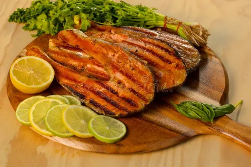

Salmon recipe

Home
Grilled Salmon
Grilling salmon is a simple way to prepare this delicious fish, resulting in a flaky texture and rich flavor. To grill salmon, start by preheating your grill to medium-high heat. Season the salmon fillets with salt, pepper, and a drizzle of olive oil to prevent sticking. Place the salmon skin-side down on the grill grates and cook for about 4-6 minutes per side, depending on the thickness of the fillet, until the salmon is opaque and flakes easily with a fork. For added flavor, you can marinate the salmon beforehand or serve it with a squeeze of fresh lemon juice and a sprinkle of fresh herbs like dill or parsley.
Ingredients
- 4 salmon fillets (6 ounces each)
- Salt and freshly ground black pepper, to taste
- 2 tablespoons olive oil
- 1 lemon, cut into wedges (optional, for serving)
- Fresh herbs like dill or parsley (optional, for garnish)
Steps
- Preheat your grill to medium-high heat (about 400°F or 200°C).
- Pat the salmon fillets dry with paper towels to remove excess moisture. This helps achieve a good sear on the grill.
- Season the salmon fillets with salt and freshly ground black pepper on both sides. Drizzle olive oil over the fillets to prevent sticking and enhance flavor.
- Place the salmon fillets skin-side down on the preheated grill grates. Close the grill lid and cook for about 4-6 minutes, depending on the thickness of the fillet.
- Carefully flip the salmon fillets using a spatula and continue grilling for another 4-6 minutes, or until the salmon is opaque and flakes easily with a fork. Avoid overcooking, as salmon can become dry.
- Remove the grilled salmon from the grill and let it rest for a few minutes before serving. This allows the juices to redistribute throughout the fish.
- Serve the grilled salmon with a squeeze of fresh lemon juice and garnish with fresh herbs like dill or parsley if desired. Enjoy your delicious grilled salmon!